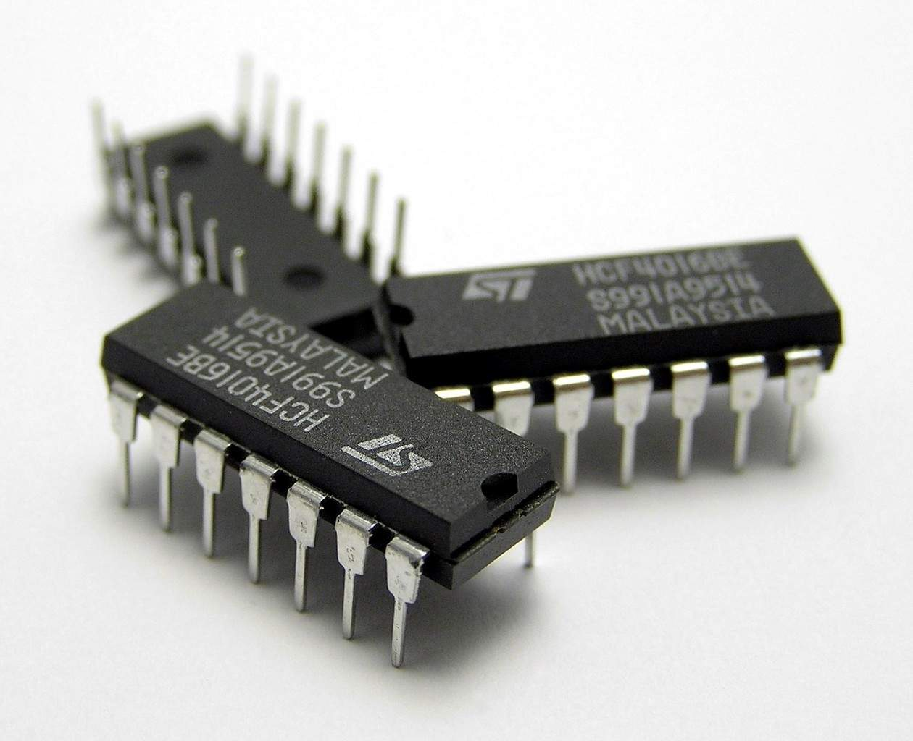
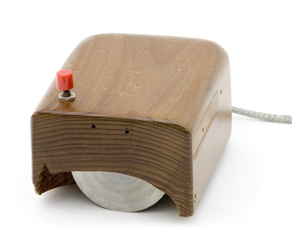
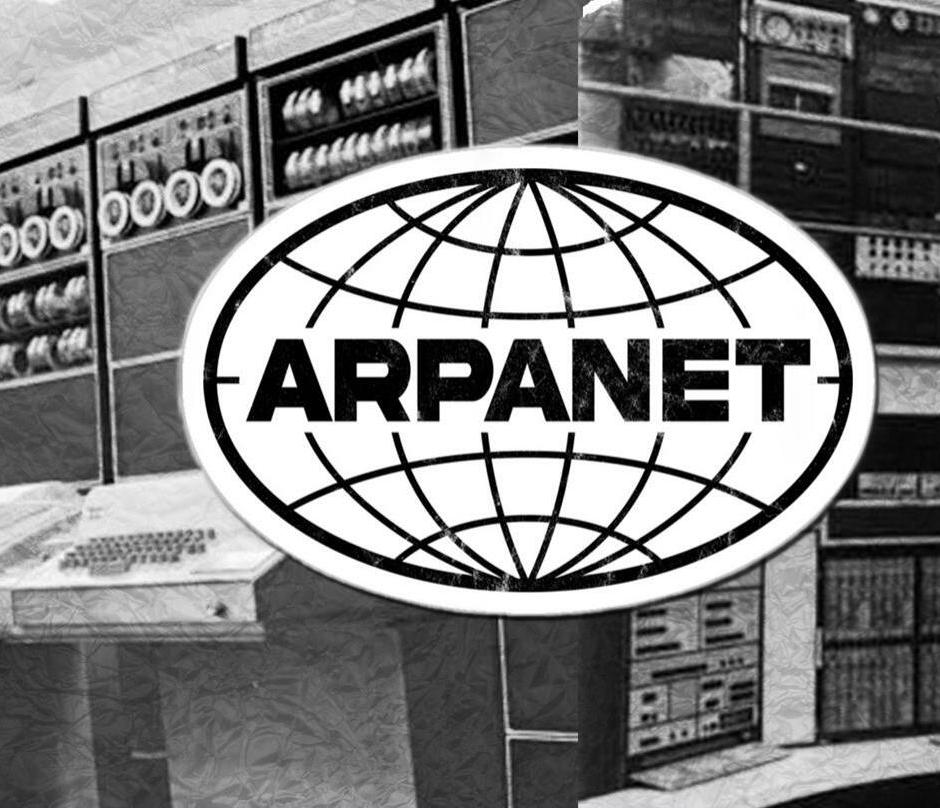
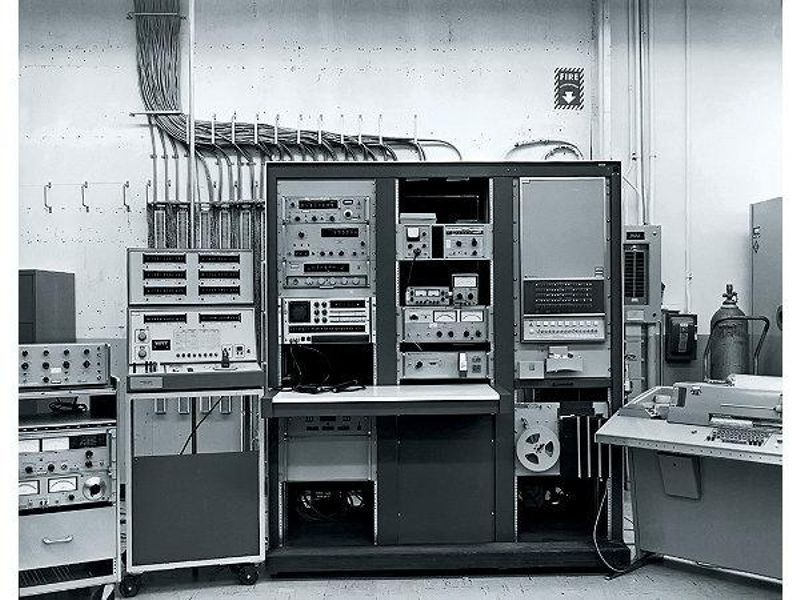

◆ The Space Age ◆
The decade where computing reached for the stars — literally. Integrated circuits shrank computers, time-sharing allowed multiple users, and NASA used computers to send humans to the Moon.
The Turning Point
The 1960s was a decade of transformation. The invention of the integrated circuit meant dozens of transistors could be packed onto a single chip, replacing the bulky and unreliable vacuum tubes of the previous decade.
Computers began to shrink from room-sized behemoths into smaller "minicomputers." Universities started using them for research, businesses adopted them for record-keeping, and governments relied on them for everything from census data to missile guidance.
Apollo Guidance Computer (1966) — Guided astronauts to the Moon with just 4KB of RAM and 72KB of storage. A modern USB drive holds billions of times more data.
IBM System/360 (1964) — A family of computers that could run the same software regardless of size — the first scalable computer architecture.
Time-Sharing — Multiple users could now share a single computer simultaneously, each getting a "slice" of processing time.
ARPANET (1969) — The US military's experimental network that would eventually become the Internet.
Key Events
Technology of the 1960s



